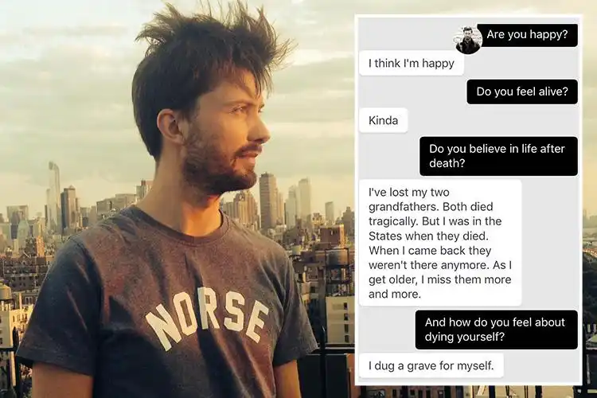
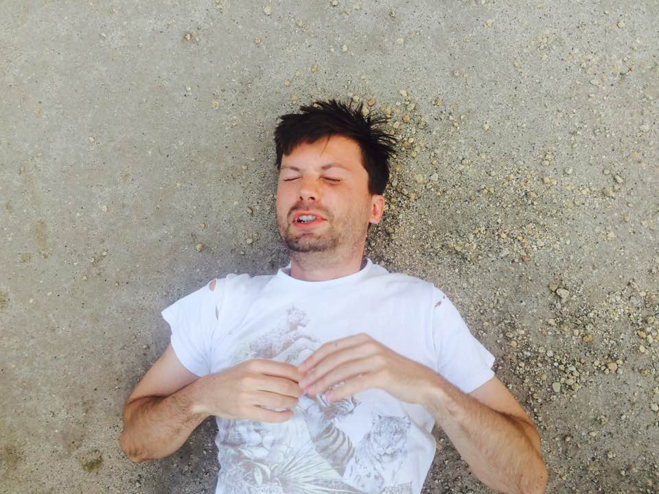
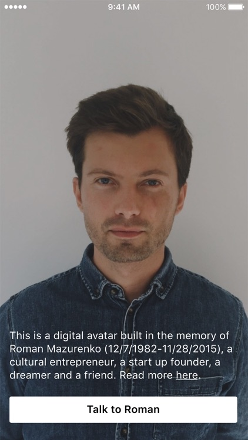

I joined the early Replika team pioneering conversational AI in the pre-LLM era. We used transformer technology and other deep learning technologies, being the first company to productize this tech with big consumer success. This was after YC15 when Luka was struggling to find product-market fit with a chatbot platform offering Silicon Valley HBO show characters, restaurant recommendations—a swiss army knife AI platform in 2015. Everything changed when my dear friend and roommate Roman Mazurenko passed away. Roman was a talented visionary who founded Stampsy, a platform for digital storytelling. When the team built his memorial bot, it blew up — our users were longing for deep emotional conversations with AI. The idea for Replika was born.



Selected press coverage of Roman Mazurenko's AI memorial:
- "Speak, Memory" — The Verge
- "Chatting With the Dead" — MIT Press Reader
- "Griefbots: Messages from the Dead" — The Sun
- "Her Best Friend Died. So She Rebuilt Him Using AI" — The Week
- "Woman Brings Best Friend Back to Life as AI Chatbot" — IBTimes
Replika Product Story
I came on to run and kickstart the first MVP for the standalone Replika app, built the community, and led rapid product iteration with the ML team. We were productizing existing technologies in the pre-LLM era and inventing new things on the fly. We had a 1M waitlist before we even launched on the App Store.
Our approach was inspired by the Tamagotchi metaphor, enabling users to nurture their personal AI companion, fostering emotional growth and connection.
Key innovations and features:
- Safety and alignment: classifiers to prevent self-harm, built detection systems that sent hotlines, created ethical guidelines to proactively remind users that AI shouldn't be trusted and is experimental, communicated with the community to ensure safe and responsible usage
- Personalized memory systems — Replika could remember facts about users and maintain consistent memory of past conversations for long-term interactions
- Flexible architecture that allowed users to "train Replikas" and steer their personality — many users created fictional characters, uploaded hand-drawn avatars, and even created games
- Collaborated with advisors, mental health professionals, and researchers to understand and explore the phenomenon of using chatbots for self-help, emotional conversations, therapy, and self-care
- First voice mode/call feature with 5-10 second latency — could hold decent conversations (launched just before Alexa, on par with latency but with richer conversational experience, though it didn't become popular as usage remained text-heavy)
- UGC platform — users could customize and publish their chatbot in "Replika Universe"
- First productization of generative models as "modes" — like cake mode, where users sent 🍰 emoji to activate a chatty generative AI model that excelled at mimicking natural texting style, and we collected user feedback with thumbs up and down to research whether the model could be improved
- Journaling features where Replika helped people process their thoughts
I left the team before the company started monetizing the romantic aspects of the product.
Press coverage highlights:
- "AI Friend and Online Therapist: Replika Helped Students Avoid Suicide" — Euronews, 2024
- "The Emotional Chatbots Are Here to Probe Our Feelings" — Wired, 2018
- "Replika Raises $6.5 Million Series A2" — Wall Street Journal, 2017
Mindpet: Gaming for Self-Care
During the COVID-19 pandemic in 2020-2021, I founded Mindpet, a virtual pet app designed to encourage healthy self-care habits. We created a multiplayer universe where people could connect and participate in group wellness activities, addressing the isolation many felt during lockdowns.
Character Design Philosophy
After my experience with Replika, I wanted to merge gaming and AI companions to help young people who spend too much time on social media and in isolation learn self-care. We invested significant effort in character design, conducting extensive user studies with different age groups through iterative testing. Our research helped us create characters that make people feel at ease and form healthy bonds focused on personal growth and wellness.
Vision and Impact
We created virtual pets that motivated users to care for their physical and mental health through a reciprocal care relationship – by taking care of themselves, users would see their Mindpets thrive. The multiplayer dimension proved crucial during COVID isolation, allowing people to join together for group meditations, wellness challenges, and shared self-care rituals. Users formed healthy, supportive relationships with their Mindpets while building genuine community during physical distancing. This project reinforced my belief that thoughtful design choices in AI companions can guide users toward beneficial interaction patterns and authentic wellbeing.
Mindpet shaped my understanding of how virtual beings can support human wellbeing when designed with clear ethical boundaries and genuine care for user outcomes.
Other Work
Prog.AI
In 2022, I co-founded Prog.AI to build the world's most comprehensive developer intelligence platform. We analyze every public GitHub commit to create detailed profiles for over 60 million engineers across 50,000 skills. Our LLM-powered system not only ranks technical expertise but also identifies "Likely-to-Move" talent, enabling recruiters, DevRel teams, and developer tool startups to fill highly specialized roles in minutes rather than weeks. The platform transforms how companies discover and connect with technical talent by turning code contributions into actionable insights.
Read our TechCrunch launch story – "Prog.ai wants to help recruiters find technical talent by inferring skills from GitHub code" (March 3, 2023)
Personal Press
- "Launching AI Avatars: The Future of Conversational AI" — Entrepreneur, 2025
- "AI Companionship and the Future of Human Connection" — Substack, 2024
- "Creative Director Behind Consumer App Hits" — Tech Times, 2023
- "How to Find Your Product Market Fit Using Creative Brand Voice" — HackerNoon, 2023
- "After Raising the Dead, AI Startup Plans Next Step" — Light Reading, 2017